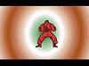
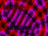
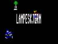
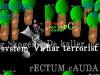

Intros 64k
| 1 (711 pts) Gene Fudge |
|
De tres beaux blobs en 3D qui se fondent les uns dans les autres a l'ecran. Superbe ! (sous win95 les blobs sont remplaces par de la neige, va comprendre Charles...) |
| 2 (574 pts) Arabi from da Bronx Tpolm |
 |
|||
|
| 3 (565 pts) Face It Jello |
|
| 4 (497 pts) Ocean Rectum Cauda |
 |
 |
||||
|
 |
5 (372 pts) Skogen Rectum Cauda |
|||||
|